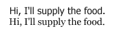

|
| ||
|
| ||
July 17, 1998
The following article was originally published in the Site Builder Network Magazine "More or Hess" column. (Now MSDN Online Voices "More or Hess" column.
I'm not a typographer, nor do I play one on TV. But my rather varied background has given me enough exposure to typesetting, font design, and graphic layout to let me provide at least a primer on fonts for the Web.
Without getting too much into the history of typography, much less that of the written word, it is important to remember that, first and foremost, text on a page is intended to convey information. Once that purely functional feature is well understood and accomplished, it is only natural to try to decorate this message -- not only to make it more enjoyable to the reader, but perhaps as a means for the writer/designer to show off some creative abilities. Sometimes this can turn the written word into a work of art.
A painter's palette in the hands of an untrained artist can result in wasted canvas. While it's true that without a certain amount of experimentation, the beginner will never become an accomplished artist, often these early works are best left hidden in the closet, or just recycled, unseen.
The same is true for typography, and selecting the fonts and styles to use in any form of document. When the Apple Macintosh debuted with its graphical word processor, the term "Font Ugly" came into wide use to describe the early exploits of untrained masses on this new graphical medium. This same phenomenon is back upon us as authoring tools make it easy to specify all sorts of different typefaces on Web pages.
For the purposes of selecting type, there are perhaps two rudimentary type styles that are important to get out of the way first: serif and sans serif. "Serif" refers to the little feet that some type designers add to their fonts for distinctive decoration. So a serif font has these feet, and a sans-serif font is without them.
This is a serif typestyle:
Specifically, this is the Georgia font
This is a sans-serif typestyle:
This is the Tahoma font
There are some important things to understand about serif and sans-serif fonts when you are selecting fonts for your documents. Traditionally, a serif font will be used for the body text of a document or other text that the writer wants to be read easily and quickly; often, it is typeset at smaller point sizes. This is because the extra decorative feet of a serif font add visual information to the text and make it easier for the human eye to distinguish one letterform from another.
Consider the following two samples:

Note that the san-serif type consists of fairly simple horizontal lines, vertical lines, and circular forms. With little in the way of unique distinguishing characteristics, it can often force the reader to work harder to make out the letters that form the words. The serif version, while not drastically different, includes just enough additional visual information to make each letter easier to recognize. Most print newspapers set their body text in a serif font. They've long been in the business of providing information to the public, so they have a lot of experience in this.
By now, you are probably noticing that the text of this article is set in a sans-serif font. (At least I assume it is, I'm not involved in selecting the fonts used in the article). Doesn't this go against what I just said? Well, not exactly. The key here is readability. On the printed page, the resolution available to display a glyph, and any decorative serifs that are part of it, is pretty high. You can cram a lot of information into a very small area on a printed page. Web pages, however, are primarily targeted at readers who are viewing them on a computer monitor. The resolution available on a computer monitor is a far cry from what is available to ink on paper. So the very serifs that add visual distinction to a paper-based document merely add visual noise to the characters displayed on a computer monitor. End result: The text is harder to read. As a general rule of thumb, I'd recommend using a sans-serif font for any text displayed at 12 pixels or less.
Since the advent of the Web, many font designers have been working on designing digital typefaces that will let them provide well-rendered characters at fairly small sizes. The Microsoft Typography group  has released a number of such fonts, which are freely downloadable from the site.
has released a number of such fonts, which are freely downloadable from the site.
Once you've selected your body font, the next thing to consider is when to use a different font.
In many cases, this will mean switching from your sans-serif body font to a complementary serif font. Again, take a look at newspapers. Notice that the headline for a news story is often set in a different font than the news article itself. And, almost always, the same font is used consistently for all of the headlines in the paper. This is how printed documents create a voice for their information. The headline is presenting information similar to what the article is, but with a significantly different approach. The information in a headline needs to be as short as possible -- in order to convince you to read the article -- while the article will often try to provide you with as much information as possible.
On the radio, you could easily have somebody with a very authoritative and distinctive voice state the headline for an upcoming news story in such a way that it grabs your attention and alerts you that something important is coming up. But if the report that follows maintains that attention-grabbing style, it would quickly tire you out, and you would most likely switch stations. A better approach would be for the reporter to switch to a more conversational tone, or perhaps even have a second person provide the report for the full story. The same is true for a headline/story type of document. Make the headlines grab the readers' attention, and then make the body text easy and enjoyable to read.
This also means you should avoid having too many different fonts on your pages. Pretend for a moment that your Web page is a script, and every different font you use represents a different person reading that text. What would it sound like when read aloud? How confusing a chorus of actors would it take to present your information? Is your font selection structured in such a way that a particular font is always used for a particular type of information? This is one of the areas of graphic design that a lot of people stumble on. It is just such a confusion of voices on a document that terms like Font Ugly describe.
Clearly, changing fonts within a paragraph, or even a sentence, should be avoided at all costs. Rarely do you really want the voice of the text to change; usually it is just the emphasis. While still using a single font, it is easy to convey differing emphasis in your information. Use such devices as Italics, Bold, Underlining, or in rare cases ALL CAPS, to help convey different inflections within your document. But even here, use not only restraint but a common approach as well. Always use italics to convey the same sort of emphasis in your document; pretend that they are how you are instructing the actor reading your script to add different inflections to his or her voice.
The issues surrounding font usage on a Web page are generally the same ones you need to consider for printed material. There is, however, one area where an important difference exists. When you have a document printed, you have total control over the fonts being used, as well as the visual layout. Not only are you assured as to which font will be used, but you usually have the chance to preview exactly what the final result will look like, and to make any desired changes before it is published. Contrast that to a Web page, in which you are allowed only to make suggestions as to the fonts to be used. Due to display-resolution differences, and possible differences in browser rendering, you have little say on the exact appearance of the final document.
When selecting fonts, carefully consider the fonts that might be installed on the user's machine. If you try using a font such as Garamond on your pages, you'll discover that this font is going to be properly seen only by people who have Microsoft Office installed. For those who don't have that font, the system's default font will be used instead. So either select a more common font, or provide a cascade that will list the fonts appropriate to your needs, and hopefully include a font that is on the user's system. Please refer to "Specifying fonts in Web pages" in the accompanying list of links for details on how to properly list the fonts you want to use.
For situations in which a particular font is critical to the information you are presenting, you can render it as a graphic to be included on your site. It is appropriate to take this approach for company logos, key site-branding elements, and perhaps link graphics, which are reused throughout your site. For a number of reasons, however, you should avoid doing this for body/content text on your site. Not only does it take longer to download, but it also means that information won't be searchable by traditional Web search engines.
When used properly, fonts can be a very powerful communicator of information. Not only can they provide a visual style that distinguishes your pages from others, but they can also help users read and comprehend what you are trying to tell them.
Robert Hess is an evangelist in Microsoft's Developer Relations Group. Fortunately for all of us, his opinions are his own.
Specifying fonts in Web pages Free core fonts for the Web Fonts supplied in other products Font embedding for the Web TypePalettes The typeright organization The Font Fairy From SBN Magazine's Site Lights column (Now MSDN Online Voices Design Discussion):
Links for further information

Information on the various ways to specify font related information on a Web page.

These TrueType fonts -- for either Microsoft Windows or Apple Macintosh -- have been specifically designed for the Web.

This page lists various products and platforms that ship with fonts. In addition to Microsoft products, it also lists fonts from Apple, Adobe, Unix and other systems. Use this page to help you understand what fonts some of your users might have already installed on their systems.

Information on how Internet Explorer 4.0 allows you to embed full font information into your Web pages so that users can see your pages with the fonts for which you designed them, even if those fonts are not installed on their machines.

How different styles can be applied to a page to get your message across.

A diverse group of type designers, developers, foundries, and aficionados who work together to promote typefaces as creative works and to advocate legal protection of typefaces as intellectual property.

Links to fonts that are freely, and legally downloadable from the Web. In most cases, these fonts are offered by their respective font foundries or designers.
Style Sheets: We're Very Font of Your Face
Nadja Vol Ochs discusses the World Wide Web Consortium's draft for the Cascading Style Sheets 2 specification, and two rival font-embedding technologies.
Photo Credit: Russell Illig/PhotoDisc; Neil Beer/PhotoDisc
Did you find this material useful? Gripes? Compliments? Suggestions for other articles? Write us!
© 1999 Microsoft Corporation. All rights reserved. Terms of use.